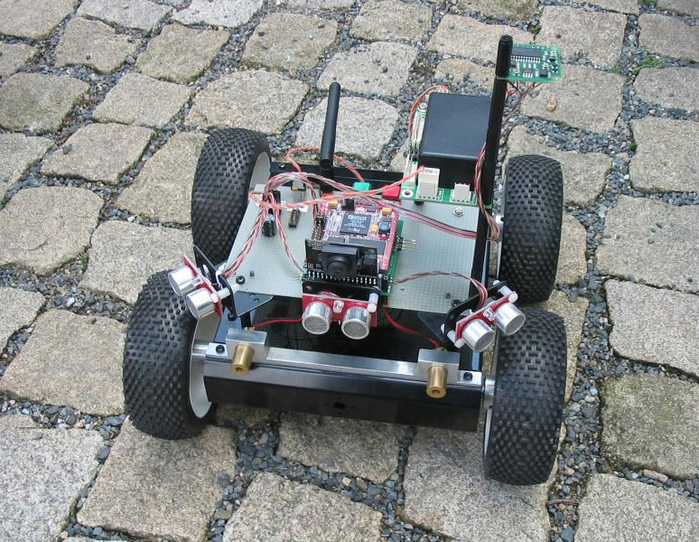

<meta charset="utf-8">
<meta name="viewport" content="width=device-width, initial-scale=1">
<title>ARBot – Robotour 2009</title>
<link rel="icon" href="../assets/img/arbot-logo.png">
<link rel="preconnect" href="https://fonts.googleapis.com">
<link rel="preconnect" href="https://fonts.gstatic.com" crossorigin>
<link rel="stylesheet" href="https://fonts.googleapis.com/css2?family=Archivo:wght@500;600;700&amp;family=JetBrains+Mono:wght@400;600&amp;family=Newsreader:opsz,wght@6..72,400;6..72,500;6..72,600&amp;display=swap">
<link rel="stylesheet" href="../assets/site.css">

<header class="sitehead">
  <a class="brand" href="../index.html"><span>ARBot</span></a>
  <nav>
      <a href="../index.html">Úvod</a>
      <a href="../pages/prezentace.html">Jak to funguje</a>
      <a href="../pages/historie.html">Historie</a>
      <a href="../pages/umisteni-v-soutezich.html" class="on">Umístění v soutěžích</a>
      <a href="../pages/verze.html">Verze</a>
      <a href="../pages/technicke-clanky.html">Technické články</a>
      <a href="../pages/kontakt.html">Kontakt</a>
  </nav>
</header>
<main>
  <div class="pagehead">
    <p class="eyebrow">Robotour &middot; 2009</p>
    <h1>Robotour 2009</h1>
  </div>

<section class="first">
  <p>Koncem září jsem se zůčastnil soutěže autonomních robotů <a href="https://robotika.cz/competitions/robotour/2009/cs">Robotour 2009</a>. Byla to, co se soutěží týče, premiéra. Pravisla jsem měl nastudovaná, co šlo odzkoušené na domácí půdě, ale přeci jen neznámé prostředí může je velkou neznámou. Navíc se nepodařilo rozchodit vše co jsem zamýšlel. GPS pracuje na 1.5 GHz a tak byla silně rušena DSP procesorem BF537 taktovaném 500 MHz a o kvalitě kompasu CMPS03 se rozepíšu někdy příště, ale vězte, že svou přesností se můře úspěšně srovnávat s lišejníkem.</p>

  <p>Povídám co nefungovalo, ale spíš jsem měl začít tím jak byl robot vybaven. Robot má čtyřkolový smykem řízený podvozek, který má hnané každé kolo s enkodérem (4xEMG+2xMD23). Robot je řízen modulem SRV1 na bázi procesoru BlackFin BF537. Jako senzory používá kameru, 3 sonary SRF08, kompas CMPS03 a GPS DG08. Disponuje WiFi konektivitou.</p>

  <p>Vzhledem k již dříve řečeným problémům s HW a hlavně nejasné představě jak řešit programovou stránku věci jsem se rozhodl celé řešení zjednodušit &ndash; udržet se na cestě a doufat, že s trochou stěstí cesta povede k cíli.</p>

  <figure>
    
    <figcaption>Robot v podobě, ve které jel Robotour 2009.</figcaption>
  </figure>

  <p>Sonary budou použity na vyhýbání se překážkám. Podle minima vzdálenosti ze sonarů se umeze dopředná rychlost robotu a pokud klesne měřenáá vzdálenost na levém či právém sonaru pod určenou mez, začne se robot otáčet na stranu kde je více prostoru.</p>

  <p>Kamera slouží pro udržení robota na cestě. Z trojúhelníkového prostoru před robotem v obrázku se určí krychle v YUV prostoru, jejiž barvy jsou považovány za cestu. Obarví se celý obrázek. Postupně od spodního řádku se nalezne prostředek cesty a tyto body se proloží přímkou. Od směrníce přímky se pomocí magické konstanty odvodí požadovaný úhel otočení robotu.</p>

  <p>Tento postup má hned několik vevýhod:</p>

  <ul>
    <li>Algoritmus je citlivý na střídání světla a stínu na cestě.</li>
    <li>Nebere v úvahu projekci kamery.</li>
    <li>Algoritmus dobře nefunguje v mezních situacích. Pokud robot stojí na kraji cesty a je orientován v jením směru, ukazuje smernice k této straně a tím místo vrácení robotu k prostrředku cesty dojde naopak k jeho výjetí.</li>
  </ul>

  <p>A jak to probíhalo?</p>

  <p>První dvě kola proběhla dle předpokladů. Robot se držel uprostřed cesty a až stín ho vytlačil mimo cestu, nedostal se ani ke křižovatce takže nuda, šeď, šeď. Zajímavé bylo až 3. kolo, kdy ARBot startoval kousek od křižovatky A3. První zádrhel nastal hned po pár metrech kdy robot chybně odbočil do segmentu Z, který nebyl vůbec na trase, naštěstí se tam motala rodinka se psem a tak se robot otočil zpátky, ale to bylo v protisměru. Na obzoru se rýsoval další šťastná náhoda &ndash; další robot v protisměru a sním sposta diváků, kterí blokovali cestu. Roboty se vyhnuly, ale diváci se začali rozestupoval. „Nebojte, on se vám vyhne“ a lidičky poslusně uzavřeli cestu a ARBot se otočil do správného směru. Jenže další úkrytické místo bylo už na obzoru. Robot, kterého jsem před chvilkou minul se začal na kulaťáku u odbočky do 3 přetlačovat s lavičkou k velkému zájmu lidiček. Bál jsem se, že se opět otočí a pojede do kotěhůlek. V tuch chvilku přišel spásný nápad. „Prosím vás, udělejte nám prostor jedem doleva.“ Dav se rozestoupil a udelal nám špalír do segmentu 3 a tak se podařilo krásně odbočit na uzkou klikatou cestu, kde po cca 10 metrech vyjel. Poslení kolo bylo podobné prvním dvoum, široká mírně zatáčející cesta. Pokus opět ukončil stín.</p>

  <p>Celkových 33 bodů a 6. místo považuji za úspěch zejména s přihlédnutím k tomu, že robot získával jen polovičku bodů, protože nevezl soudek píva.</p>
</section>

<section>
  <p><a href="umisteni-v-soutezich.html">&larr; Zpět na Umístění v soutěžích</a></p>
  <p class="mono" style="font-size:13px;color:var(--muted)">Text a obrázky jsou převzaté z původního webu na Google Sites; znění článku je beze změn.</p>
</section>

<footer>
  <div class="foot-in">
    <span class="mono">ARBOT &middot; AUTONOMNÍ MOBILNÍ ROBOT</span>
    <span>Zdrojový kód, vývojová dokumentace a měření:
      <a href="https://github.com/AlesRuda/ARBot3">github.com/AlesRuda/ARBot3</a></span>
  </div>
</footer>
</main>
